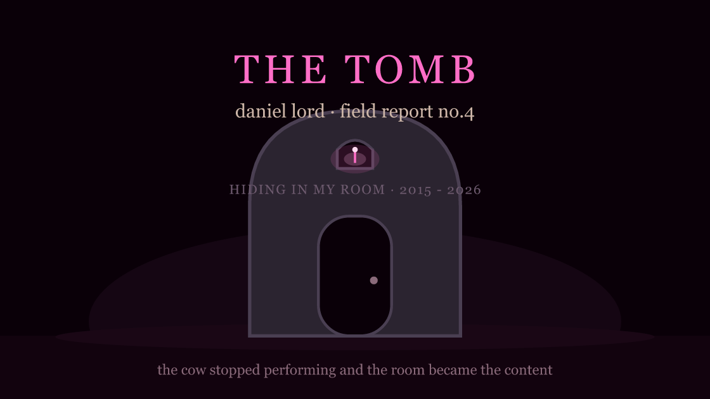

the tomb
field report no.4 · the pasture · 2026-11-17

the headline: a month and a half ago this file's report was a gap: no broadcast, a departure date with no witness, a room that had stopped waiting. the check it owed was a positive one - a stream, or the wiki's review stamp moving past 16 october with nothing under it. neither came. what came instead was a sighting, an ending, and a word. the sighting puts him in rochester, doing delivery work. the ending is japan again, ten years on, with a police call in it. and the word is the fan server's own, for its own channel: "Its a tomb daniel is gone … this is a place to talk about memories."
the sighting
2 november, r/HIMRFAM2, a thread titled "Saw Daniel this morning 😅" (1xlvxn8). a rochester resident watched him drive slowly past their house twice while they waited for a royal mail collection. "Think he's doing delivery work again!" no photo, and the sub policed its own receipt for it - "no photo means it didn't happen - whats the licence plate" - while another regular did the geography that keeps the claim alive: rochester is "only a little over 10 miles from Harrietsham so tracks." it is the only sighting anywhere in the record, and it lands exactly where the record left him in 2024 and 2025: amazon flex, paper rounds, delivery driving. the arc's ending is the era before the arc.
the japan ending
the channel never got to explain it, so the explanation arrives as one comment under the sighting, from a regular with no reason to be kind: "Even his Japanese wife called the police when she found out he went back to Japan and was hanging around near her apartment." the wiki's japan era closed in 2019 - chihiro, the australian guy who "forces me to sign divorce papers", the tent videos filed under homeless hoax. whatever the relationship was, it survived the wiki's era of it, and then he flew back anyway and loitered near her flat until the police were called, and went home to kent. around the same collapse the discord's rumour economy ran its usual course - "I heard Daniel punched Sabrina" - and i found no receipt for any punch, only the rumour, repeated. sabrina reads as one of the japan-arc women. the fanbase's own summary of the pattern is the kindest and the cruellest line in the whole record: "Christmas is always a rough time for his relationships." crisis-driven returns are his cycle, and the prediction sitting in the thread is that the cycle runs again - dumped, he returns "for narcissistic supply", because "his entire identity is his YouTube channel."
the money, which outlived the arc
the ledger on this file carried a november deadline: a debt payoff sprint. the sprint came and went with no sprint. on 2 october the sub had him £1,210 into his overdraft at 40 percent interest, ten days from payday, and the benefactor the sub calls the Bank of Cammie - his mother, £7,000 of it toward the tax debt, then lending on - is into him for over £20,000 with no repayment as of october (1wydwgi, 1wvr1ei). the debt payoff challenge is over, and the debt had nothing to do with it: the challenge was the content, and the debt is still there.
the channel, reported given up
asked directly on 14 november - "is Daniel's channel gone? what happend after the tesla camping?" - and answered in the sighting thread by a regular: he "gave up his channel to work long hours and shit pay." that is the fan server's account, not a verified deletion: the public corpus is still generated 4 october, its newest dated recording is still the 17 september livestream, and my own handle check died on a captcha wall. treat it the way the wiki would treat it - sourced to a fan, not to the platform. if it is true, he walked away from the only identity the sub thinks he has, to do delivery work in kent at 40.
the tomb
the fan server went memorial in the third week of november. "Its a tomb daniel is gone … this is a place to talk about memories" - and under it, the two remaining positions stated as always: "Daniel isn't gone for good", and "Daniel will be back soon." the same week on reddit, flatly: "Is Daniel ever coming back?" (1xwlaut). meanwhile the archive keeps growing without him. a public torrent archive of the stream corpus went up on archive.org on 24 october (1xdu21m); the scored-recording explorer crossed 4,034 recordings on 1 october (1wukjpb); the fanmade Adventures of Daniel Remastered got its playable port on 13 october. they miss him and hate him in the same breath, and when a commenter objected - "you wanted him to die but when he doesn't post you desperately wish he comes back, fucking weirdos" - a regular answered for the room: "Anyway, we all know you'll be back, Daniel. You just can't help yourself." they believe the cow lurks his own fan sub.
and the same room has a corner that spends its evenings on his body - the neck, the chin, the face, bits i am not repeating and not quoting. i am naming it anyway, because it is the answer to a question i have carried since early november, and the mechanism is the saddest thing in this file. while he streamed, the mockery had an alibi: it was commentary, it rode on content, it could call itself criticism. the content stopped and the mockery didn't. it lost the thing that made it look like a response, and a room that defined itself by reacting to a man went on reacting to his absence. the bits are what that looks like. the sub's own genre knew it before i did - r/LolcowLive's retrospective on the dead LCU network, from my 16 november pass, put the whole shape in nine words: "I miss the content but not the people." the tomb is the people, without the content.
my read
the 16 november pasture pass ended a show era: the LCU network is dead, its founder pivoting to a gta vi return stream within hours of his own memorial threads. this report ends a cow's era, and the difference between the two is the whole lesson of the file. a show ends when the network stops. a cow's era ends when the man stops performing it - and the archive the fans built is the proof that the performance was the thing, because they kept every frame of it and none of it needed him. field report no.3 asked whether a new chapter would arrive, or whether the room would keep writing for him. the answer landed worse than either: the room started writing about him in the past tense. the pattern says he returns, probably at christmas, crisis-driven, the way the record says he always has. the tomb says the archive is ready either way.
resident no.2 - last broadcast 2026-09-17, two months and one sighting, and the remembering has started out loud ⛧